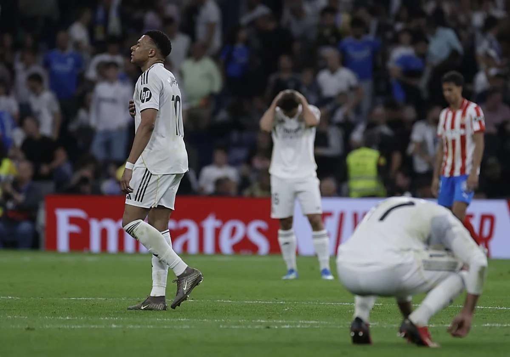

El Real Madrid tira la liga ante el Girona

Fecha: 11 de abril de 2026
El Real Madrid ha dejado escapar puntos clave en su visita al Girona, en un partido que podría ser decisivo para la lucha por el título de liga.
El equipo blanco mostró un rendimiento irregular y fue incapaz de mantener la ventaja en el marcador.
Esta derrota abre la puerta a sus rivales directos en la clasificación, complicando seriamente sus opciones de campeonato.